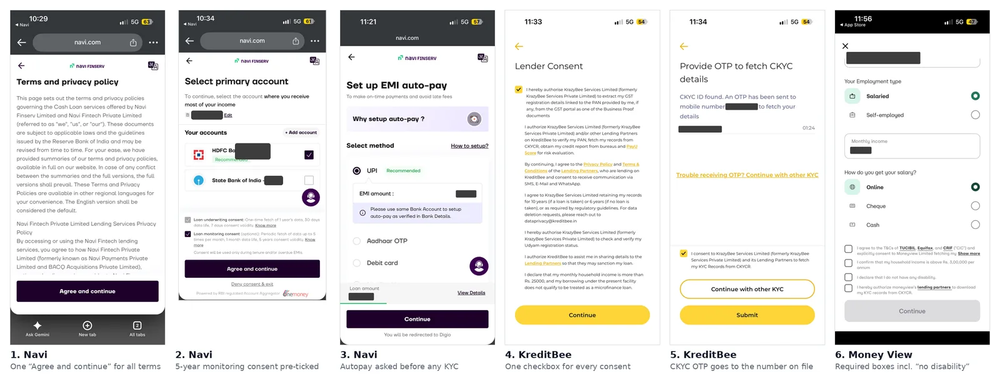
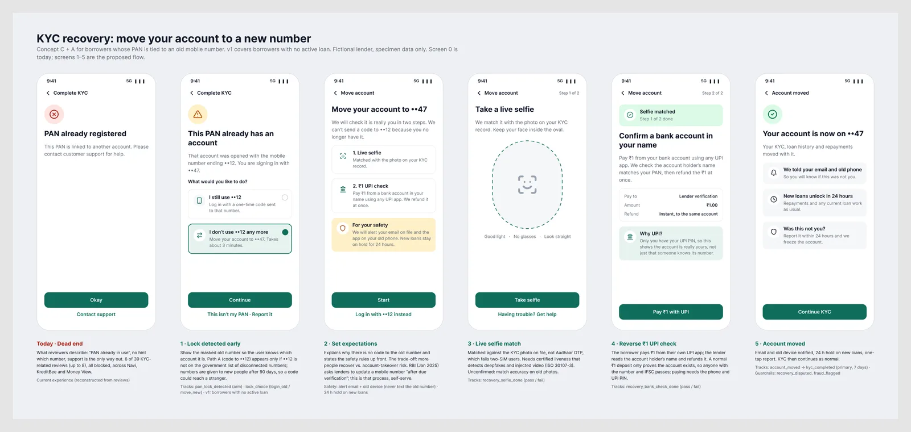

Let a borrower whose PAN is tied to an old mobile number move the account to their new number inside the app, after a live selfie and a reverse ₹1 UPI check. Version 1 covers borrowers with no active loan.
Borrowers who changed their mobile number, or use two SIMs, try to sign up on the new number and are told their PAN is already in use. The PAN stays tied to an older account and number, and there is no self-serve way to re-link it. KreditBee's own FAQ confirms the only routes: log in with the old number, or email support. CKYC and Aadhaar OTPs go to the number on file, so the official records don't help either.
Returning borrowers with no active loan whose PAN is tied to an older account and a number they no longer have, or a second SIM.
RBI's January 2025 circular asks lenders to clean data against the list of disconnected numbers and update a mobile number "after due verification". Press reports in December 2025 say telecom authorities asked apps to act on flagged numbers, so more accounts may lock.
I pulled 567 Play Store reviews that mention KYC (Sep–Oct 2026), read and tagged 102 of them, and found 40 about the KYC step itself. Every count below is out of those 40.
| What reviewers hit at KYC | Reviews (of 40) | Blocked |
|---|---|---|
| Identity or data mismatch, including the PAN lock | 13 | 12 |
| Permissions or trust | 10 | 3 |
| Waiting with no status | 8 | 1 |
| Camera, documents or retries | 7 | 6 |
| Video KYC | 5 | 3 |
A review can carry two codes, so the rows add up to 43 across the 40 reviews.
Why this one: 6 of the 40 describe a PAN locked to an old or second number, on all three apps, and every one of them was fully blocked. It is a dead end with a clear owner and a clear fix.

| Option | Verdict |
|---|---|
| Log in with the old number | Kept as path A, only when the old number is still active |
| Support ticket | Rejected: what borrowers get today, and reviews show it fails |
| Move the account in the app | Chosen, together with path A |
| Allow a second account on the new number | Rejected: duplicate PAN accounts break fraud and bureau checks |
| Aadhaar face authentication | Later: a lender needs UIDAI authentication approval |
| Do nothing | Rejected: blocked borrowers leave, and the number clean-up will lock more accounts |

Why these checks: nothing goes to the old number, because operators give a disconnected number to someone new after 90 days. Paying ₹1 needs the borrower's phone and UPI PIN, while receiving ₹1 only proves an account exists. A selfie works for two-SIM users, where Aadhaar OTP fails.
Trade-off: every self-serve recovery path is also an account-takeover path. The 24-hour hold, the alerts and version 1's no-active-loan rule limit the damage while the guardrails are proven.
Locked users only, split 50/50 when the lock is detected. Primary metric: KYC completed within 7 days. Guardrails: disputed recoveries or fraud flags within 30 days, KYC pass rate, approval rate, with a fraud stop rule.
About 200 locked users per group to detect a lift from an assumed 10% to 20%, at 5% significance and 80% power. At a 1% lock rate that is about 40,000 KYC starts, so it needs a lender with real volume.
I wrote the event plan (lock detected → choice → selfie → bank check → account moved → KYC completed) and three SQL queries for the readout: completion by group, drop-off by step, and the fraud guardrail. Base case: about 30 extra loans and ₹5.6 lakh disbursed per 100,000 KYC starts; every input except the ₹18,802 average ticket is an assumption.
| Check | Navi | KreditBee | Money View |
|---|---|---|---|
| Consent separate from terms | Bundled | Bundled | Separate, but all required |
| Pre-ticked boxes | 5-year monitoring consent | 5 boxes | None |
| Withdraw consent or delete data | Only through chat, about 7 taps | Only through support | Only by email |
Giving consent takes one tap in all three apps; taking it back does not. DPDP requires withdrawal to be as easy as giving consent from 13 May 2027, so these are readiness gaps, not breaches.